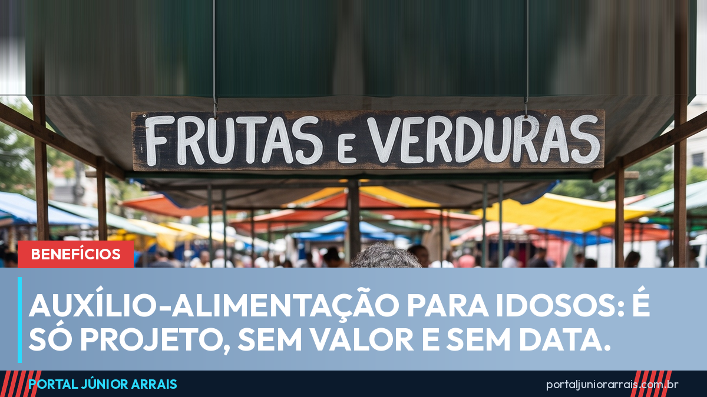
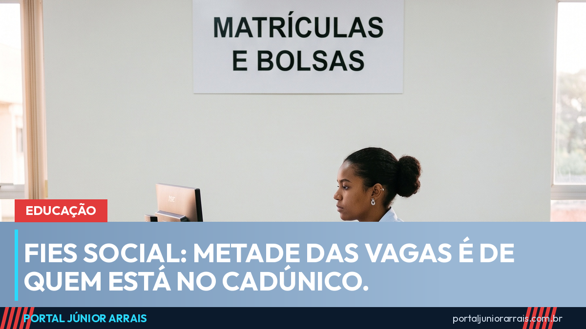
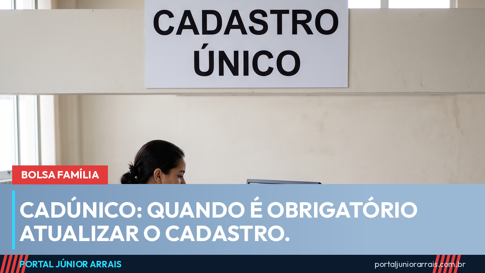
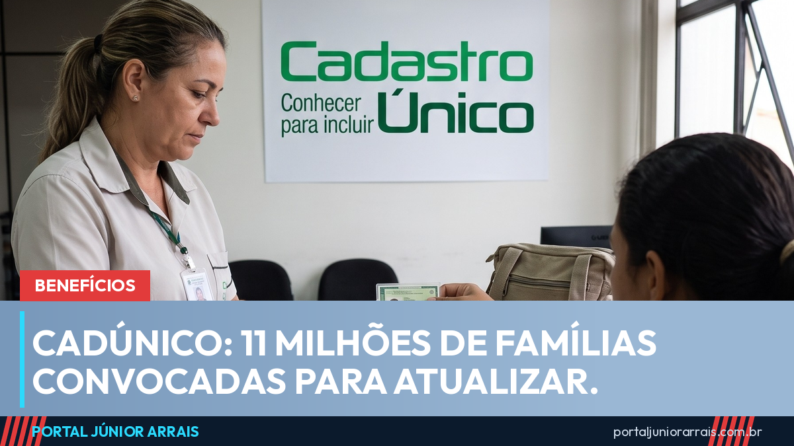

Início › CadÚnico
CadÚnico 2026: quem pode entrar, calculadora de renda e prazo de atualização
O Cadastro Único, o CadÚnico, é o registro das famílias de baixa renda nas bases do governo federal e a porta de entrada de quase todo benefício social do país, do Bolsa Família ao Pé-de-Meia. Ele não é um benefício: é o cadastro que permite pedir os benefícios. Aqui você calcula a renda por pessoa da sua família, descobre até quando vale o seu cadastro e entende a revisão cadastral de 2026, com as notícias mais recentes, atualizadas todos os dias.
Até quando vale o seu cadastro? Escolha o mês e o ano da última atualização:
Quem pode se inscrever
Pode entrar a família com renda de até meio salário mínimo por pessoa, R$ 810,50 em 2026. Para chegar a esse número, soma-se tudo o que os moradores da casa recebem no mês e divide-se pelo número de pessoas. Famílias com renda maior também podem ser incluídas quando estão ligadas a algum programa que usa o cadastro. O cadastro é feito por família, e uma pessoa com pelo menos 16 anos, de preferência mulher, assume o papel de responsável familiar.
Os programas que usam o CadÚnico
Estar no cadastro é condição para todos estes programas, mas não garante nenhum. Cada um tem o seu limite de renda por pessoa:
| Programa | Renda por pessoa | Observação |
|---|---|---|
| Bolsa Família | até R$ 218,00 | renda até R$ 218 por pessoa |
| BPC/LOAS | até R$ 405,25 | só para idoso com 65 anos ou mais ou pessoa com deficiência |
| Gás do Povo | até R$ 810,50 | prioridade para quem recebe Bolsa Família |
| Pé-de-Meia | até R$ 810,50 | só para estudante do ensino médio público |
| Tarifa Social de energia | até R$ 810,50 | desconto na conta de luz |
| Desconto Social de energia | de R$ 810,50 até R$ 1.621,00 | faixa entre meio e um salário mínimo por pessoa |
A lista vai além: Minha Casa Minha Vida na faixa subsidiada, Fies Social, isenção de taxa de concurso e de Enem, carteira do idoso e tarifa social de água também usam o cadastro.
Os dois prazos de atualização
- a cada 24 meses, mesmo que nada tenha mudado: a Lei nº 15.077/2024 fixou esse limite para quem recebe benefício, e a convocação costuma chegar a partir dos 18 meses;
- na hora, sempre que algo muda: nascimento, morte, alguém que entra ou sai da casa, novo endereço, emprego ou renda diferente, criança que troca de escola.
Como vários programas leem a mesma base, um cadastro desatualizado pode derrubar o Bolsa Família e o desconto na conta de luz ao mesmo tempo. Detalhes em quando é obrigatório atualizar.
A revisão cadastral de 2026
O Ministério do Desenvolvimento e Assistência Social convocou cerca de 11,3 milhões de famílias para atualizar os dados: cadastros sem atualização desde dezembro de 2023 ou antes e famílias com Bolsa Família, BPC ou Tarifa Social cuja última atualização foi entre janeiro de 2024 e janeiro de 2025. Quem não responde no prazo do seu grupo tem o Bolsa Família bloqueado por até dois meses e depois cancelado, perde a Tarifa Social e, no BPC, pode ter o pagamento suspenso. As exclusões de cadastro estavam previstas para começar em novembro de 2026.
A convocação verdadeira chega pelos canais oficiais: mensagem no aplicativo do Cadastro Único, aviso no extrato do Bolsa Família e, na Tarifa Social, recado impresso na conta de luz. Veja o que acontece com cada benefício.
Quem mora sozinho e a biometria
A visita em casa para atualizar o cadastro de quem mora sozinho e recebe Bolsa Família, e de quem recebe BPC, foi adiada para 1º de julho de 2027 pela Portaria MDS nº 1.199/2026. Ela continua obrigatória para entrar no Bolsa Família e para famílias em averiguação. Já a biometria tem prazo até 31 de dezembro de 2026 para quem é elegível ao Bolsa Família e para quem pede alguns benefícios do INSS e do trabalho, pela Portaria Conjunta nº 23/2026; quem já tem biometria no título de eleitor, na CNH ou no passaporte segue a regra anterior. O caminho é a nova Carteira de Identidade Nacional, cuja primeira via é emitida sem cobrança.
Últimas notícias do CadÚnico

Auxílio-alimentação para idosos do CadÚnico: por enquanto é só projeto, sem valor e sem data8 de set. de 2026
Fies Social: metade das vagas é de quem está no CadÚnico e pode cobrir 100% da mensalidade1 de set. de 2026
CadÚnico: quando é obrigatório atualizar, mesmo que nada tenha mudado1 de set. de 2026 Cashback do imposto: quem está no CadÚnico vai receber de volta o que paga na luz e no botijão31 de ago. de 2026
Cashback do imposto: quem está no CadÚnico vai receber de volta o que paga na luz e no botijão31 de ago. de 2026
CadÚnico: revisão convoca 11,3 milhões de famílias e bloqueios começam em novembro22 de ago. de 2026- Dignidade Menstrual: absorvente na farmácia para quem está no CadÚnico5 de ago. de 2026
- Como saber se você está no CadÚnico e se o cadastro está em dia28 de jul. de 2026
- CadÚnico dispensa visita em casa para quem mora sozinho; entenda a regra28 de jul. de 2026
As regras completas estão no guia do CadÚnico.
Calendários dos benefícios
Perguntas frequentes
Estar no CadÚnico garante algum benefício?
Não. O CadÚnico é o cadastro que permite pedir os benefícios, não um benefício. Cada programa tem a própria regra de renda e outras exigências, e a seleção é feita pelo órgão responsável por ele.
De quanto em quanto tempo preciso atualizar?
No máximo a cada 24 meses, mesmo que nada tenha mudado, e na hora sempre que algo muda: nascimento, morte, alguém que entra ou sai da casa, mudança de endereço, emprego, renda ou escola das crianças.
O que acontece se eu não atualizar?
Na revisão cadastral de 2026, quem foi convocado e não atualizou pode ter o Bolsa Família bloqueado por até dois meses e depois cancelado, perder a Tarifa Social de energia e, no BPC, ter o pagamento suspenso. Cadastro com 48 meses sem atualização pode ser excluído da base.
Quem mora sozinho precisa receber visita em casa?
A visita no domicílio para atualizar famílias de uma pessoa só que recebem Bolsa Família, e para quem recebe BPC, ficou adiada para 1º de julho de 2027 pela Portaria MDS nº 1.199/2026. Ela continua obrigatória para entrar no Bolsa Família e para famílias em averiguação cadastral.
Preciso fazer biometria?
A Portaria Conjunta nº 23/2026 fixou 31 de dezembro de 2026 como prazo para o cadastro biométrico de quem é elegível ao Bolsa Família e de quem pede alguns benefícios do INSS e do trabalho. Quem já tem biometria na Justiça Eleitoral, na CNH ou no passaporte segue a regra anterior.
Cuidado com golpe
A revisão cadastral virou isca. Circulam mensagens dizendo que o cadastro "será excluído hoje", com link para "atualizar pelo celular", e falsos agentes que batem na porta ou ligam pedindo dinheiro para "regularizar o CadÚnico" ou "garantir a vaga" em algum programa. Há também quem venda "inscrição" em benefício, o que não existe: a seleção é automática, feita pelo governo a partir do cadastro.
Nenhum órgão do governo cobra taxa nem pede Pix, senha ou foto do cartão para fazer ou atualizar o cadastro. Se a família foi bloqueada, cortada de algum programa ou ficou com dúvida sobre como declarar a renda, não pague quem promete resolver por fora: procure um profissional de sua confiança para analisar a situação.
Fontes oficiais
- MDS: página oficial do Cadastro Único
- Lei nº 15.077/2024 (validade de 24 meses das informações)
- Decreto nº 11.016/2022 (regulamenta o Cadastro Único)
- MDS: Instrução Normativa Conjunta nº 2/2026 (revisão cadastral e Portaria nº 1.199/2026)
Página atualizada em 14 de nov. de 2026. Conteúdo informativo — não substitui orientação individualizada sobre o seu caso.
Júnior Arrais · Editor do Portal Júnior Arrais
Comunicador de Ubá (MG). Escreve todos os dias sobre benefícios sociais, INSS, trabalho e economia do dia a dia, a partir do Diário Oficial, de portarias e de fontes oficiais, em linguagem simples. Conheça a linha editorial e a política de correções do portal.